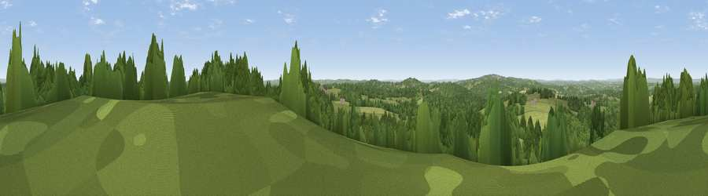

Saxonbury Hill
#29135 in England · top 32% of its area beats it · near Mark CrossWhere it is
The exact computed spot (TQ 57702 32900). Click the marker for map links.
The view, rendered

A 360° render of this exact spot computed from the terrain model, tree cover and land cover — summer colours, afternoon light, calibrated against photographs of famous viewpoints. Real trees, hedges and buildings will differ in detail.
The panorama
Grey silhouette: terrain skyline in each direction (720 bearings, Earth curvature and refraction included). Dashed green: skyline with trees (+15 m) and buildings (+8 m) as obstacles. Blue strip: how far the ground is visible on each bearing.
Where the view opens
Wedge length = distance to the farthest visible ground on that bearing (vegetation-aware). Rings at 10, 25 and 50 km.
What fills the view
50% grassland · 48% woodland · 2% cropland ·
Angular shares of the visible panorama (visual magnitude), not map area. Landscape diversity 0.35 (0–1 Shannon).
Key numbers
More beautiful places nearby
The staircase of upgrades: each row has a higher view potential than everything closer. Driving times are estimates from straight-line distance, calibrated against real road routing — check an actual route before setting out.
| Place | Direction | Drive | Score |
|---|---|---|---|
| Viewpoint near Town Row | W · 2 km | ~5 min | 49.7 |
| Best Beech Hill | ESE · 5 km | ~10 min | 55.6 |
| Viewpoint near Upper Hartfield | W · 11 km | ~20 min | 59.6 |
| Brightling Obelisk [Brightling Down] | SE · 15 km | ~27 min | 69.1 |
| Viewpoint near Glynde | SSW · 26 km | ~42 min | 70.8 |
| Malling Hill | SW · 26 km | ~42 min | 73.8 |
| Cliffe Hill | SW · 26 km | ~42 min | 79.3 |
| Firle Beacon | SSW · 28 km | ~45 min | 88.9 |
51.07376, 0.24969 · source: dobih hill · position refined by local search. Computed location — check access rights before visiting.